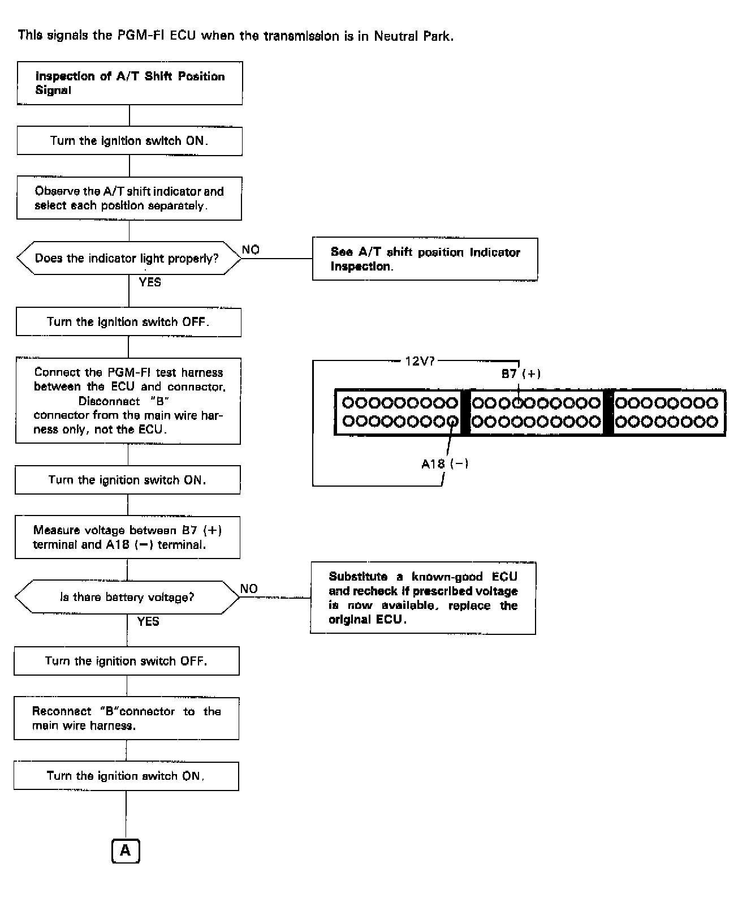
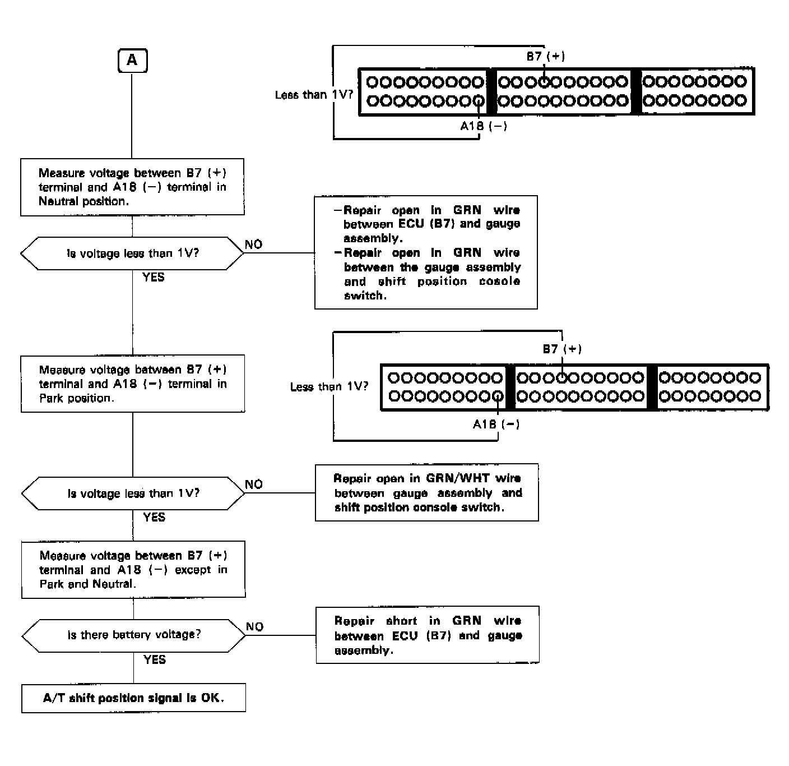

Operation CHARM
: Car repair manuals for everyone.
Home
>>
Acura
>>
1991
>>
Integra L4-1834cc 1.8L DOHC FI
>>
Repair and Diagnosis
>>
Powertrain Management
>>
Computers and Control Systems
>>
Testing and Inspection
>>
Component Tests and General Diagnostics
>>
Automatic Transaxle (A/T) Gear Position Signal
>>
Troubleshooting Flowchart
Troubleshooting Flowchart


A/T SHIFT POSITION SIGNAL FLOW CHART